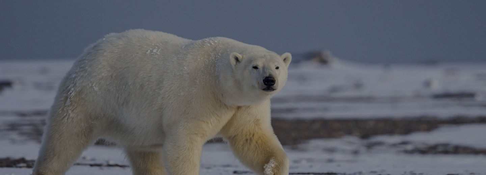

ORIGINE: ANIMALE MARINO
ORSO POLARE
L’orso polare è un mammifero semi-acquatico che vive nei paesi che circondano il circolo Polare Artico
PERCHÈ È IN VIA DI ESTINZIONE?
L'orso polare è un animale a forte rischio per via dei cambiamenti climatici che stanno portando alla rottura dei ghiacciai. Questo porta a una riduzione di spazio e poi affaticamento per la ricerca di cibo.
- Dimensioni: è di grandi dimensioni, raggiunge i 500/600 kg e i 2,5 metri di altezza.
- Vita media: 25/30 anni.
- Colore: pelliccia bianca spessa 11 cm per poterli tenere al caldo.
- Alimentazione: foche, pesci e uccelli.
- Stile di vita: è un animale solitario, tranne nel periodo della riproduzione e quando nascono i loro cuccioli.
- Curiosità: è un animale che riesce a nuotare per grandi distanze e molto velocemente, riuscendo a stare anche in apnea per ben 2 minuti.